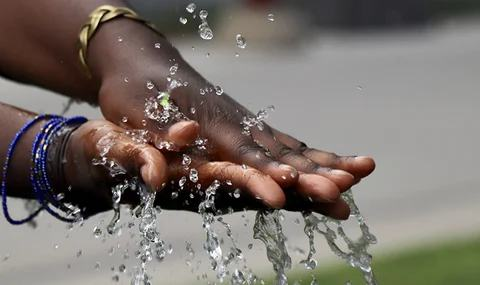
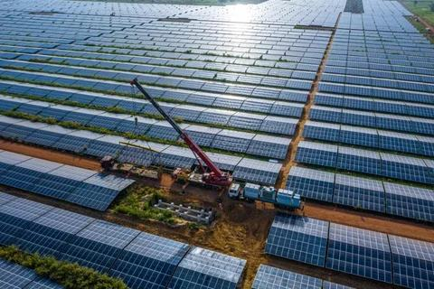
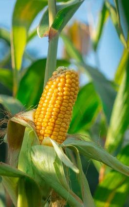
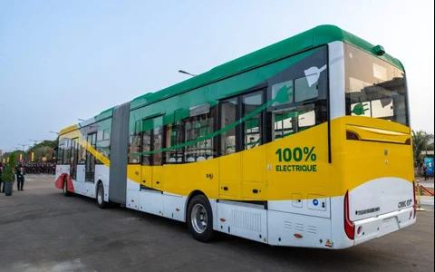

Fonds Souverain d'Investissements Stratégiques du Sénégal
Depuis 2012, le bras financier de l'État pour les investissements stratégiques, en partenariat avec le secteur privé.
Institué par la loi n° 2012‑34 du 27 décembre 2012 — membre adhérent aux Principes de Santiago (FMI)

Catalyser, structurer, co‑investir
Le FONSIS agit comme le bras financier de l'État pour les investissements stratégiques, en mobilisant des capitaux privés vers les projets à fort impact économique.
Financement de projet
Infrastructure & développement
Structuration de développement
Conception → mise en œuvre
Fonds de fonds & politique d'investissement
Véhicules dédiés par secteur
Quatre priorités de transformation
Chaque investissement, en partenariat avec le secteur privé.

Eau & Énergie
Accès à l'eau, énergie fiable

Agrobusiness
Chaînes de valeur agricoles
Santé & Pharma
Accès aux soins, pharma locale

Infrastructures & Transports
Infrastructures qui connectent le pays
Le portefeuille en mouvement
Véhicules et filiales à travers lesquels le FONSIS déploie ses investissements sectoriels.
Des investissements ancrés dans les régions
Diriger le Fonds Souverain d'Investissements Stratégiques, c'est porter une responsabilité constamment présente à l'esprit : celle de faire fructifier ce qui appartient, au fond, à chaque Sénégalaise et à chaque Sénégalais.
Né en 2012 d'une conviction simple : transformer l'économie par des investissements qui changent durablement la donne, toujours en partenariat avec le secteur privé.
LOI N° 2012‑34 DU 27 DÉCEMBRE 2012
L'équipe qui pilote la mise en œuvre
Noms et fonctions illustratifs — comité à confirmer avec les données RH du FONSIS avant mise en production.
Ce qui s'est passé récemment
Toutes les actualités →
Documentation & rapports
À connecter à la médiathèque du FONSIS.